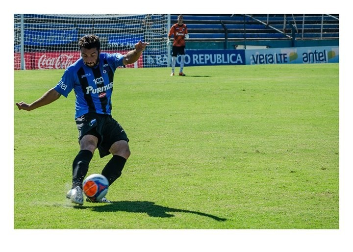

Entrevista a agustín lucas (futbolista y poeta uruguayo) // Por Federico Frau Barros
El defensor de las letras

Futbolista profesional y poeta, Agustín Lucas, recorrió varios países de América Latina con su fútbol y sus rimas. Jugó al fútbol en Guatemala donde reeditó su primer libro, pasó por un equipo venezolano y volvió a Uruguay donde fue capitán de la Institución Atlética Sud América. Hace pocos días firmó contrato para regresar al club que lo vio nacer, Miramar Misiones de Montevideo, y acaba de sacar su quinto libro. En medio de todo esto vivió un año en Argentina. ¿Dónde podría haber jugado este poeta si no en el Club Comunicaciones?
E
l escritor Robert Graves dijo alguna vez que ser poeta es más una condición que una profesión. La misma máxima se podría aplicar para el futbolista. Agustín Lucas, poeta y futbolista uruguayo, tal vez haya nacido con ambas condiciones.
A sus 29 años jugó profesionalmente como zaguero en ocho clubes de distintos países de Latinoamérica, publicó cinco libros y forma parte de un dúo de música y poesía llamado Hey Mujik!.
-¿Cuáles fueron tus influencias literarias?
-Hace un tiempo te hubiera dicho que leía a Onetti y me gustaba la poesía de tal o cual. Pero ahora la referencia a la hora de escribir es mucho más amplia. Una banda de rock de barrio para mí es una influencia. Por ejemplo, escucho Jóvenes Pordioseros y le presto el oído. Veo de qué habla, del amor, de la falopa, del vino o del rock and roll. El rap es otra cosa que me fascina. Por otro lado, Zitarrosa es también una de mis referencias. Así que influencia de poetas tengo muchas pero también tengo de otro tipo.
-¿Y en el plano futbolístico?
-Por decir algunos, Paolo Montero y el “Caballo” Kanapkis de Uruguay. De Argentina el “Cata” Díaz. Walter Samuel también me gustaba mucho. Igual yo te puedo hablar de Montero, de este otro, pero el verdadero ídolo es el que la caga varias veces como la cagaba Maradona. Por eso Messi no es tan ídolo, hace todo bien. Si haces todo bien yo empiezo a desconfiar. De las macanas vas aprendiendo.
-¿Quiénes te gustan de los que combinaron literatura y fútbol?
-Roberto Fontanarrosa, Eduardo Sacheri. Ellos son cracks. Soriano también, lo conocí cuando me lo leyó mi viejo hace poco.
***
El padre de Agustín tal vez haya sido su principal influencia, escribe y lee mucho. También jugó al fútbol de joven, pasó por Miramar Misiones, Nacional de Montevideo y San Lorenzo de 33 Orientales, donde también jugó su tío abuelo, Uruguay Lucas, ídolo del club. “Lo dijo Maradona, los ídolos están en casa”, dice Agustín con una sonrisa.
-¿Tus padres estaban de acuerdo con que jugaras al fútbol?
-Mi viejo nunca me dijo tenés que jugar al fútbol o tenés que estudiar. Tampoco me jodió mucho con el estudio porque mientras hacía las inferiores estudiaba. Mal que mal lo hacía, no tengo cara de estudiante pero me iba bien.
***
Recientemente Agustín se convirtió nuevamente en jugador de Miramar Misiones de Montevideo, el club donde hizo las todas las inferiores junto con los mundialistas uruguayos Alvaro Pereira y Sebastián “Papelito” Fernández. Viene de un desgarro que lo tuvo lejos de las canchas por un tiempo, pero como él mismo dijo en un reciente escrito por los cien años de Liverpool de Montevideo, club con el que ascendió a la primera división del fútbol uruguayo en el último campeonato, “las lesiones son como cuando la maestra te pone en penitencia, uno ve las cosas de afuera un rato y extraña”.
“Se aprecia con furia, se vive con emoción pero vuelve a las cosas básicas y lindas que a veces esconde la cotidiana”, describe en el texto que se puede leer en la web Por decir algo.
Agustín siempre escribió en paralelo a su carrera futbolística y los momentos en que los golpes lo tuvieron fuera de las canchas también fueron fuente de inspiración. Tras una rotura de ligamentos en Venezuela escribió su segundo libro que luego presentó en Uruguay.
¿Cómo vivís las lesiones?
La cabeza se te dispara, no sos el mismo. Estás quieto, comés, te cambia todo el metabolismo. Quedas incapacitado de hacer un montón de cosas que siempre hiciste. Vivís lejos del vestuario que es como tu dormitorio. Imagino que debe sentir lo mismo el que entra en la vejez.
SUBTITULOS:
sus clubes
Miramar Misones, Montevideo Wanderers, Cerro Largo, Sudamericana, Liverpool FC (Uruguay), Deportivo Jalapa (Guatemala), Deportivo Anzoátegui (Venezuela) y Comunicaciones (Argentina)
sus libros
“No todos los dedos son prensiles” (Pirates editora, Uruguay 2007) y (Libro Ati, Guatemala 2010); “Club” (Editorial Yaugurú, Uruguay 2011); “Insectario” (Editorial Yaugurú, Uruguay 2014); “Besala como sabés” (Llanto de Mudo, Argentina 2015), “Lado B, lo que uno hace por el otro” (Ediciones Túnel, 2015).
También participó de antologías como “Los hijos del fuego” (El Perro y la Rana, Venezuela 2011) y “Fóbal” (Estuario Editora 2013), entre otras.
#comunosevende
Cuando estuvo en Comunicaciones se interesó por el presente político del club que estaba atravesando un momento histórico, los socios luchaban contra el intento de expropiación por parte del Sindicato de Camioneros comandado por Hugo Moyano. “La camiseta decía Comu no se vende y dije, acá hay una fuerza importante. La gente del barrio se impuso al poder y a la guita y eso a mí me gustó de Comunicaciones, sentir que representaba esa fuerza fue muy interesante”, recuerda.
#noalabaja
Lucas fue partícipe activo de la campaña en contra de la reforma constitucional que proponía bajar la edad de imputabilidad. Agustín llamó a algunos colegas suyos para que se sumaran a la campaña que contó con el apoyo del mismísimo entrenador de la selección uruguaya, el “Maestro” Óscar Washington Tabárez. Los futbolistas Gonzalo Malán, Gustavo Aprile, Facundo Barceló Santiago González y Sebastián Fernández apoyaron la lucha convocados por Agustín. Referentes políticos, artísticos y sociales también fueron parte de esta campaña por el No a la Baja que finalmente se impuso tras una consulta popular en las últimas elecciones presidenciales uruguayas.
Si tus colores
(Poema de Agustín Lucas)
Olor a lilimento.
Versos en cada zapato.
Formas del amor. Ojos brillando.
Tapones golpeando el alma,
palmadas que piden calma.
Se habla de presión,
se habla de rabia.
Se habla de reír, se habla de fama.
Se habla del dolor.
Se habla del drama.
Se habla con pasión. Cara con cara.
Se habla del error y del acierto.
Tribunas llenas, estadios desiertos.
Se habla hasta que todo
calla un momento,
pita el juez, empieza el concierto.
Rock del aliento, lluvia de centros,
noventa milagros peleándole al viento.
Verano en el pecho, invierno en los sesos,
no existen palabras cuándo te beso,
Camiseta.